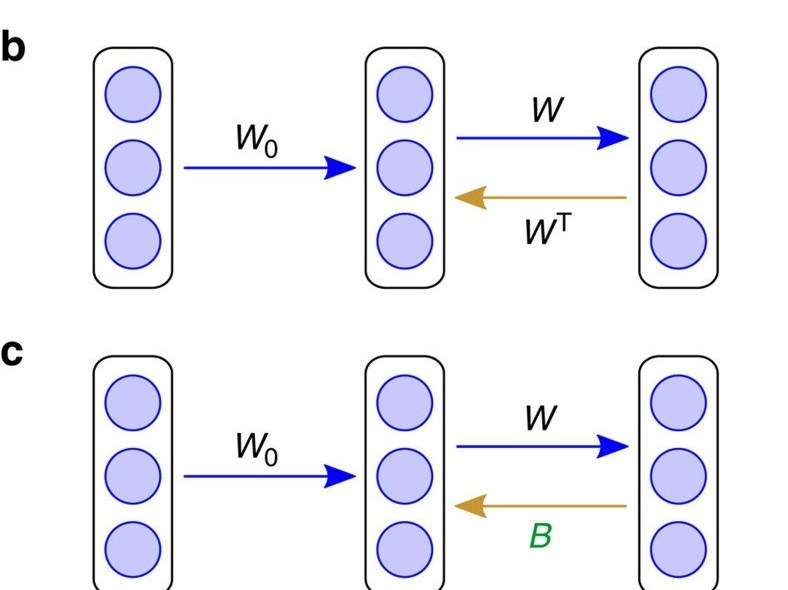

Neural Networks, Mechanically
Fundamentals: optimisation · neural networks · floating point · memory and the 1 kHz loop · GPUs · processes and the kernel · dynamics algorithms · deploying policies · policy files · how neurons compute · bits, delays and control. Measured on my workstation (Intel i7-9700, RTX 2070 SUPER, Ubuntu 24.04, Linux 6.8); code in the site's tools/posts/.
A policy or a dynamics model is a stack of matrix multiplies and nonlinearities trained by the chain rule. Four mechanical facts decide whether training works: how signals and gradients scale through depth, which frequencies the network learns first, how gradients survive through time, and how much the backward pass really needs. Each is measured below. The last one connects to a question from neuroscience: can a brain, which has no transposed weights, learn an internal model of an arm? A network with random feedback weights can.
1. Backpropagation is the chain rule, run backwards
For a layer \(z = Wh + b\), \(a = \phi(z)\), the gradient of the loss with respect to \(z\) is \(\delta = \phi'(z) \odot (W_{\text{next}}^\top \delta_{\text{next}})\), and then \(\partial L/\partial W = \delta\, h^\top\), \(\partial L/\partial b = \delta\) (Rumelhart, Hinton and Williams 1986). Reverse mode costs a small constant times the forward pass, whatever the number of parameters. It must store every activation of the forward pass, which is why memory, not arithmetic, limits long-horizon backpropagation through time and differentiable simulation.
2. Signals through depth
With weights of variance \(\sigma_w^2\) and \(n\) inputs per unit, a pre-activation has variance \(n\sigma_w^2\) times the mean square of the previous layer's outputs. Keep that factor at one and signals neither vanish nor explode. For tanh, which is linear near zero, that means \(\sigma_w^2 = 1/n\) (Glorot and Bengio 2010). For ReLU, which zeroes half its inputs, \(\sigma_w^2 = 2/n\) (He et al. 2015). Figure 1 pushes a batch through 50 layers of width 256. With He initialisation the ReLU activations hold at 0.92; with \(1/n\) they fall to 7e-08. A tanh network at \(4/n\) keeps its activations bounded but saturates, and its gradients grow to 1,814 times their output size.
A mechanical detail I tripped over: biases matter. My first version of the inverse-dynamics experiment below left them out, and every network stalled at the error of a linear fit. A tanh network without biases computes an odd function, \(f(-x) = -f(x)\), and the centred target was not odd.
3. Networks learn low frequencies first
Rahaman et al. (2019) showed that MLPs fit the low-frequency components of a target long before the high ones. Figure 2 fits a sum of sines at frequencies 1, 4, 16 and 32 with a 3-layer ReLU network for 4000 Adam steps. The plain network ends with relative errors of 0.2%, 6%, 87% and 95%. With 64 random Fourier features of the input (Tancik et al. 2020), every frequency is fitted to better than \(10^{-5}\).
For robots the bias cuts both ways. Contact makes dynamics and good policies change sharply across a surface, which a smooth network represents poorly; positional encodings help. But smoothness is also what keeps actions from chattering on hardware, so high-frequency features need a matching smoothness penalty.
4. Gradients through time
A recurrent network backpropagates through a product of Jacobians, \(\partial h_t/\partial h_{t-T} = \prod_k \mathrm{diag}(\phi'(z_k))\,W\). For a linear network with an orthogonal \(W\) scaled by \(\rho\), the norm is exactly \(\rho^T\). Figure 3 measures it over 100 steps: 2.7e-05 for \(\rho = 0.9\), 13,781 for \(1.1\). Even an orthogonal tanh network shrinks the gradient to 0.26, because \(\phi' < 1\) away from zero (Pascanu, Mikolov and Bengio 2013). Gated cells, orthogonal initialisation and gradient clipping exist for this reason. The dynamics of trained recurrent policies are worth analysing in their own right (population dynamics review).
5. Learning without the transposed weights
Backpropagation sends errors backward through \(W^\top\), the transpose of the forward weights. A brain has no obvious way to do that, since synapses are one-way and a feedback pathway does not know the forward weights. Lillicrap et al. (2016) showed that it does not need to. Send the error back through a fixed random matrix \(B\) instead (Figure 4). The forward weights come to align with \(B^\top\), and the random feedback becomes useful. They called it feedback alignment.

I tested it on a robotics problem the cerebellum is thought to solve: learning a two-link arm's inverse dynamics, the map from joint angles, velocities and accelerations to torques. With a 6-64-64-2 tanh network and the same Adam step on each rule's update signal, backprop reaches a normalised test error of 2.3e-04, feedback alignment 6.8e-04, and training only the output layer 0.19 (Figure 5). Random feedback is within a factor of three of exact gradients, and both are hundreds of times better than not learning the hidden layers at all.
6. What to take away
- Initialise for unit gain per layer, and check activation and gradient scales at initialisation before blaming the optimiser.
- Expect smooth networks to miss sharp contact structure; add encodings deliberately and penalise action roughness.
- Recurrent policies need gated or orthogonal dynamics to carry information over a contact phase.
- Exact gradients are less essential than they look. Learning rules a brain could implement can still train an internal model of an arm.
References
| Reference | Venue |
|---|---|
| Rumelhart, Hinton, Williams, Learning representations by back-propagating errors | Nature 1986 |
| Glorot, Bengio, Understanding the difficulty of training deep feedforward neural networks | AISTATS 2010 |
| He et al., Delving Deep into Rectifiers | ICCV 2015 |
| Rahaman et al., On the Spectral Bias of Neural Networks | ICML 2019 |
| Tancik et al., Fourier Features Let Networks Learn High Frequency Functions in Low Dimensional Domains | NeurIPS 2020 |
| Pascanu, Mikolov, Bengio, On the difficulty of training Recurrent Neural Networks | ICML 2013 |
| Lillicrap et al., Random synaptic feedback weights support error backpropagation for deep learning | Nat. Commun. 2016 |
| Kawato, Internal models for motor control and trajectory planning | Curr. Opin. Neurobiol. 1999 |